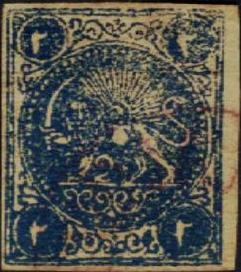
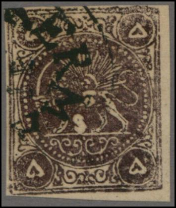
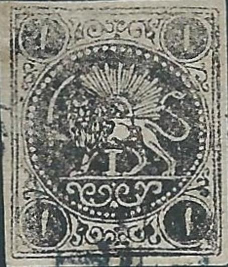
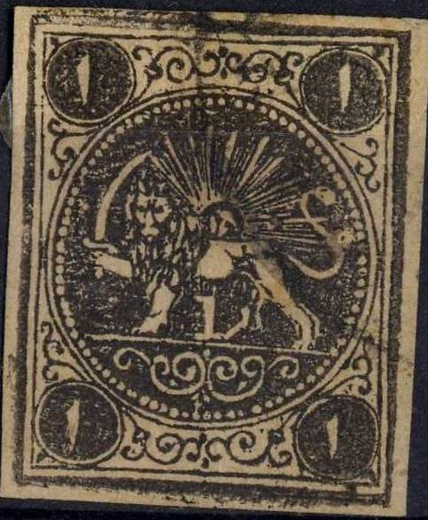

PERSIA Forgeries and reprints of the 1868
issue, part 1
Currency: 1 Toman = 10 Kran = 200 Chahi (or
Shahi), after 1881: 1 Kran = 100 Centimes
Return To Catalogue -
Persia 1868 issue, Boital reprints -
Persia 1868 issue, forgeries, part 2 -
Persia 1868 issue, forgeries, part 3 -
Persia (Iran) 1868 issue
Note: on my website many of the
pictures can not be seen! They are of course present in the
catalogue;
contact me if you want to purchase the catalogue.
More information about stamps from Persia, forgeries etc. can
be found on: http://www.persi.com/fakes/fakes/fake.html,
http://fuchs-online.com/iran/lions-03.htm or
http://www.iranphilatelic.org/scams.htm. Also the book of
Friedrich Schuller 'Die Persische Post und de Postwerthzeichen
von Persien und Buchara' has much information.
Official reprints of 1877:

Reprinted for stamp collectors. They were never postally used.
The 2 ch blue and 8 ch green were still available and were not
reprinted, source: http://fuchs-online.com/iran/lions-09.htm.
Note the large scratch on the most right 4 ch stamp (the first
strip of three stamps probably did not have the damaged cliche in
it; I've seen other strips of three stamps with a white space
where this cliche used to be).
This reprint of the 4 ch has the last damaged cliche removed.
The damaged cliche of the 4 ch stamp was brought
to Paris by postmaster Boital, who then (after slightly fixing up
the plate? but the white scratch is still very visible) made
enormous amounts of reprints, see Persia
1868 issue, Boital reprints
Page of the book of Friedrich Schuller 'Die Persische Post und de
Postwerthzeichen von Persien und Buchara' showing several
forgeries.


Mottes-Sauerland forgery? In the book of Friedrich Schuller 'Die
Persische Post und de Postwerthzeichen von Persien und Buchara' a
similar forgery is shown on Plate II, image 2 (2 ch blue), image
10 (1 T red on yellow and black) and image 11 (5 ch violet).
This might be the forgery shown in Friedrich Muller's book on
Plate II, image 4 as Mottes forgery.

This might also be image 10 of Friedrich Mulller's book? Note the
staring white eyes of the lion and the straight line on the
hindleg of the lion.
This could be image 20 of Muller's book (although I'm not sure).
These 4 K blue forgeries might be the forgery type shown in
Muller's book on Plate II, image 9. Note that the circle of
pearls is not truely circular (especially in the lower left
part). The circle does not touch the left frameline.
Two 2 ch stamps, one in blue and the other in black, not
corresponding to any genuine type. The lion has a totally white
body (genuine stamps have a star-like structure at this
location). This is the type described in Muller's book, Plate II,
image 21. The values 1 ch black, 4 ch red and 8 ch green are also
shown in his book.

Forgeries of the 1 ch black stamp, also with pink and purple
cancels. The ornaments on top are too far from the central
circle. Is this the forgery described in the book of Friedrich
Schuller 'Die Persische Post und de Postwerthzeichen von Persien
und Buchara'? In this book it is shown on Plate II as image 16.
Note that the last stamps have a different '1'.
The book 'Lions of Iran' by Mr. Mehrdad Sadri
seems to be quite useful in determining forgeries of these
stamps. This book also gives descriptions of essays etc. (I have
not read this book myself).
For Persia 1868 issue,
forgeries, part 2, click here.
Copyright by Evert Klaseboer


{kind=link}
{kind=link}
{kind=link}
{kind=link}